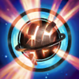

Asesina
Dificultad Moderada
HABILIDADES


PASIVA • SOMBRA DEMONIACA
Cuando no se encuentra en combate, Evelynn entra en su Sombra Demoniaca. Sombra Demoniaca cura a Evelynn cuando tiene poca vida y le otorga Camuflaje a partir del nivel 5.
1 • PÚAS DE ODIO
Evelynn ataca con su látigo dos veces, lo que inflige daño a la primera unidad que alcanza. Luego, puede disparar otra línea de púas a los enemigos cercanos.
2 • SEDUCCIÓN
Evelynn maldice a su objetivo, lo que hace que su siguiente ataque o hechizo después de un retraso ralentice o encante, según el tiempo de la maldición, y reduzca la resistencia mágica de su objetivo.
3 • LATIGAZO
Evelynn ataca a su objetivo con su látigo, lo que inflige daño. Luego, obtiene velocidad de movimiento durante unos momentos. Al salir de Sombra Demoniaca, Latigazo atrae a Evelynn hacia su objetivo.
DEFINITIVA • ÚLTIMA CARICIA
Evelynn se vuelve inalcanzable y diezma la zona frente a ella antes de teletransportarse una larga distancia hacia atrás.
CONFIGURACIÓN
OBJETOS
-

Sombrero Mortífero de Rabadon
3500+120 Poder de Habilidad
DAÑO EXCESIVO: Aumenta el Poder de Habilidad en un 40%.
-

Maldición del Liche
2950+80 Poder de Habilidad
+10 Aceleración de Habilidad
MALDICIÓN: +5% de Velocidad de Movimiento.
ESPADA ENCANTADA: Usar una habilidad causa que el siguiente ataque dentro de 10 seg inflija daño mágico adicional igual al 75% AD básico (+50% AP). (1.5 seg de Enfriamiento).
El daño se reduce contra estructuras. -

Orbe del Infinito
3150+200 Vida Máxima
+60 Poder de Habilidad
DESTINO: +5% de Velocidad de Movimiento.
BALANCE: +15% de Penetración de Magia.
MUERTE INEVITABLE: Las habilidades y los ataques potenciados infligen golpes críticos con un 20% de daño adicional contra enemigos por debajo del 35% de Vida. -

Báculo del Vacío
2800+70 Poder de Habilidad
DISOLVER: +40% de Penetración de Magia.
-

Morellonomicón
3000+300 Vida Máxima
+70 Poder de Habilidad
PREDICADOR DEL FIN: +15 de Penetración de Magia.
AFLICCIÓN: Infligir daño mágico aplica un 40% de Heridas Graves a campeones enemigos por 3 seg. Si el objetivo está por debajo del 50% de Vida, este efecto aumenta a un 60% de Heridas Graves.
Heridas Graves reduce la efectividad de las curaciones y efectos regenerativos. -

Botas Jonias de la Lucidez
1000CALZADO: +40 de Velocidad de Movimiento.
LUCIDEZ: +15 de Aceleración de Habilidad.
INVOCADO: Reduce los enfriamientos de hechizos un 15%.
CARRERA (ACTIVA): Aumenta la Velocidad de Movimiento un 15% durante 3 seg. Infligir o recibir daño de campeones desactiva los efectos de Carrera. (60 seg de enfriamiento). -

Encantamiento de Protocinturón
500PROTOCINTURÓN (ACTIVA): Te desplazas hacia adelante y liberas misiles en un cono que infligen 75-145 de daño mágico. Si más de un misil alcanza campeones o monstruos, los misiles adicionales solo infligen un 10% de daño. (60 seg de enfriamiento).
RUNAS Y HECHIZOS
-

Electrocutar
Alcanzar a un campeón con 3 ataques o habilidades separados dentro de 3 seg inflige daño adaptable adicional.
DAÑO: 30-184 (basado en nivel) (+40% adicional AD) (+25% AP).
ENFRIAMIENTO: 25 seg. -

Brutalidad
Obtienes 7 de Daño de Ataque y un 2% de Penetración de Armadura o 14 de Poder de Habilidad y un 2% de Penetración de Magia (adaptable).
-

Coraza Ósea
Después de recibir daño de un campeón, las siguientes 3 habilidades o ataques de un campeón contra ti dentro de 1.5 seg infligen de 30 a 60 (basado en nivel) menos daño (45 seg de Enfriamiento).
-

Pionero
Obtienes un 9% de Velocidad de Movimiento en maleza, jungla y río fuera del combate.
-
Castigo
Enfriamiento: 10 seg
Inflige 440 de daño verdadero (440-1000) a un monstruo épico o grande, o a un súbdito. Usar Castigo sobre monstruos restaurará 70 de Vida (70 + 10%). Matar a 4 monstruos grandes mejora Castigo a Castigo Devastador o Catigo Desafiante, que puede utilizarse sobre campeones enemigos.
Permiso para Cazar: Obtienes un 20% de experiencia adicional de monstruos de la jungla de forma permanente, pero obtienes un 20% menos de oro y experiencia de súbditos de forma temporal.
Diente y Uña: Inflige un 10% más de daño mágico y te restauran 30 de Vida durante 5 seg.
Obtiene un carga cada 45 seg, hasta un máximo de 2. -

Destello
ENFRIAMIENTO: 150 seg.
Te teletransportas una distancia corta hacia delante o hacia la dirección objetivo.
CÓMO JUGAR EVELYNN
Evelynn es una jungla asesina que usa su invisibilidad y habilidades para asesinar a los campeones enemigos. Una vez que Evelynn despeje por completo la jungla, obtendrá el nivel 5, lo que significa que será invisible cuando esté fuera de combate para que pueda escabullirse por el mapa y hacer emboscadas para que su equipo tenga una ventaja. Evelynn no es la mejor en peleas de equipo, pero aún puedes quedarte cerca de tus compañeros de equipo, solo asegúrate de no acercarte demasiado a los enemigos o ellos podrán verte.